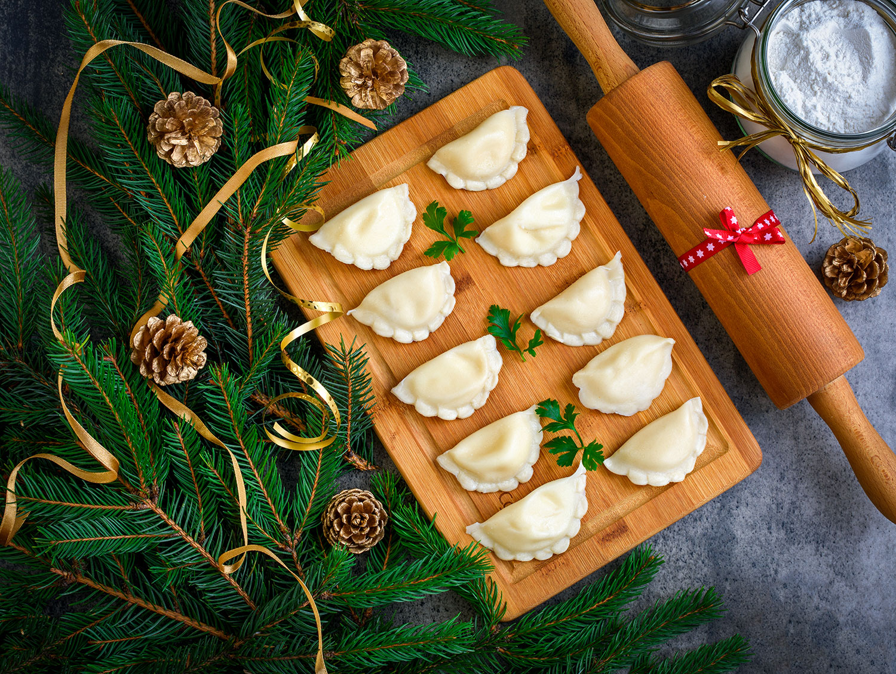

Pierogi z kapusta i grzybami

Chyba każdy zna ich smak. Pierogi z kapustą i grzybami to jeden z klasyków wigilijnego stołu, a także kuchni polskiej.
Jedni lubią z kapustą kiszona inni ze słodką. Moja dzisiejsza propozycja to te ze słodką kapustą.
Skladniki:
Na ciasto:
- 500 g maki
- jajko
- szklanka cieplej wody
Na farsz:
- kilogram kapusty slodkiej
- duza cebula
- 400 g szuszonych grzybow
- sol i pieprz
Przygotowanie:
- Szatkujemy kapuste i gotujemy w osolonej wodzie przez 20 minut
- Cebulke pokrojona w kostke podsmazamy na patelni
- Dodajemy do niej odcisnieta kapuste i pokrojone grzyby
- Wszystko razem podsmazamy
- Zagniatamy wszystkie skladniki na ciasto
- Kroimy na mniejsze czesci i rozwalkowujemy cienkie placki
- Wycinamy szklanka kola i karzdy nadziewamy farszem
- Gotujemy w osolonej wodzie do momentu jak wyplyna na wierzch
Strona glowna